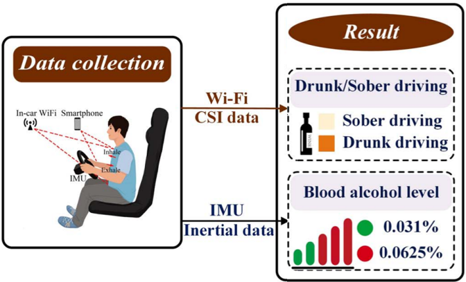

|
Peng Kuang
I am currently a master's student in Zhejiang University, supervised by Prof. Zhibo Wang. I have obtained B.Eng from Wuhan University majoring in Computer Science and Technology.
Email /
CV /
Scholar /
Github
|
|
Research Interest
My general research interests lie in understanding how deep learning models generalize and how to make them robust and reliable, especially from a data-centric perspective.
|
|
|
Rethinking Debiasing: Real-World Bias Analysis and Mitigation
Peng Kuang, Zhibo Wang, Zhixuan Chu, Jingyi Wang, Kui Ren
arXiv, 2024
Paper
We empirically and theoretically uncovered critical characteristics of real-world biases that not only largely differ from previous assumptions but also cause failure of existing debiasing methods. Through in-depth analysis from a data-centric perspective,
We further proposed a principled approach that effectively improves the robustness of models to real-world biases within training data.
|
|
|
Echo: Reverberation-Based Fast Black-Box Adversarial Attacks on Intelligent Audio Systems
Meng Xue, Kuang Peng, Xueluan Gong, Qian Zhang, Yanjiao Chen, Routing Li
Proceedings of the ACM on Interactive, Mobile, Wearable and Ubiquitous Technologies, 2023
Paper
We propose Echo, a physical adversarial attack that leverages natural reverberation to create imperceptible perturbations for attacking audio systems. Our method generates robust adversarial examples that remain effective in real-world environments with
varying room sizes and background noise, achieving successful attacks in both digital and physical scenarios.
|
|

|
DetectDUI: An In-Car Detection System for Drink Driving and BACs
Yanjiao Chen; Meng Xue; Jian Zhang; Runmin Ou; Qian Zhang; Peng Kuang
IEEE/ACM Transactions on Networking, 2021
Paper
In this paper, we present DetectDUI, a contactless, non-invasive, real-time system that yields a relatively highly accurate drink driving monitoring by combining vital signs (heart rate and respiration rate) extracted from in-car WiFi system and driver's
psychomotor coordination through steering wheel operations.
|
Design and source code from Jon Barron's website.
|
|
{kind=link}